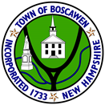
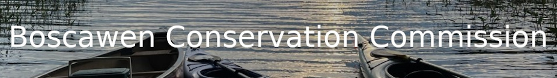
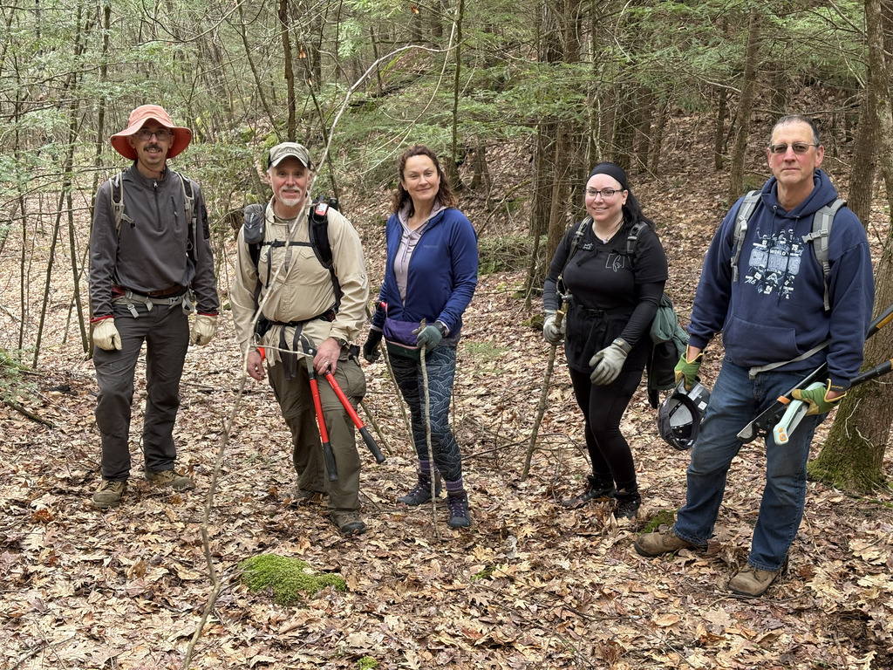
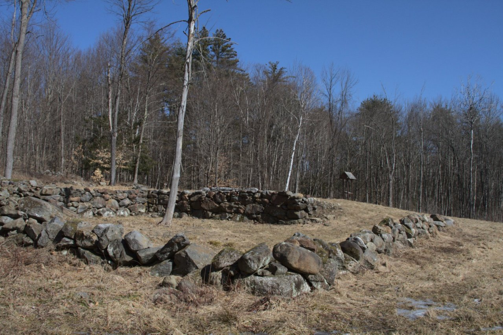

Spring has sprung! Our Volunteer Work Day at Boscawen Village Town Forest was a resounding success! Read more about it here.
Remember to keep an eye out for turtles, salamanders, and other critters that feel the need to cross the road this time of year.
Celebrate the Forest Society's steward class of 2026! Read more about their field day and learn about what it means to be a lan steward for the forest society.
Want to help out? Boscawen's Conservation Commission is a group of volunteers working together to preserve the Town's natural resources and make these resources available to the community in a sustainable way. The Conservation Commission would love to have you! Learn about what we do and how to join. Don't live in Boscawen? Volunteer opportunities are available through the Society for the Protection of New Hampshire Forests (aka the Forest Society) and other organizations. See our links page and the flyer below.
Our Town Forests include over 20 miles of hiking trails and access to Walker Pond, one of the least developed Great Ponds in New Hampshire. Maps, directions, and other information can be found here.
Aside from the Town Forests the Commission is involved in a number of other projects in Town. The Morrill Easement is the largest of several easements and was purchased in a joint venture with the Society for the Protection of New Hampshire Forests. Timber harvests occasionally take place on Town land. These are done primarily to preserve the health of the forest, but are also a source of revenue. To learn about these and other projects, look here.
Under the heading of links you will find a list of websites curated by Commission that includes partner organizations, other local conservation organizations, resources for further education, and other sites of particular interest.

Foundation on old Weir Farm